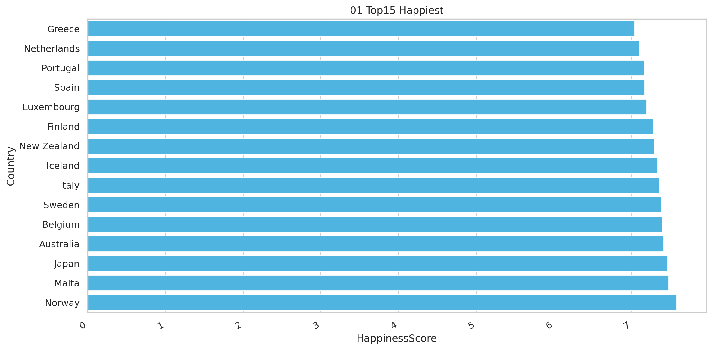
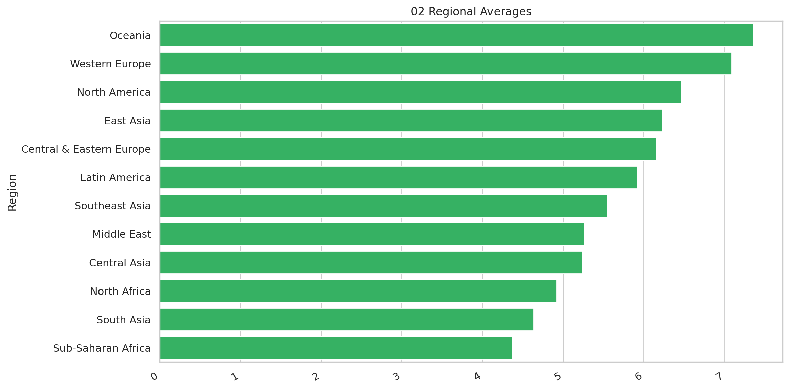
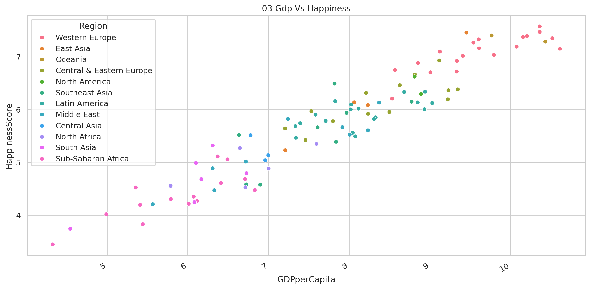
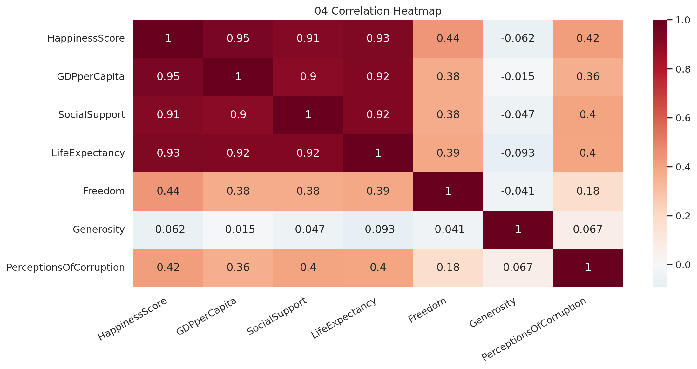
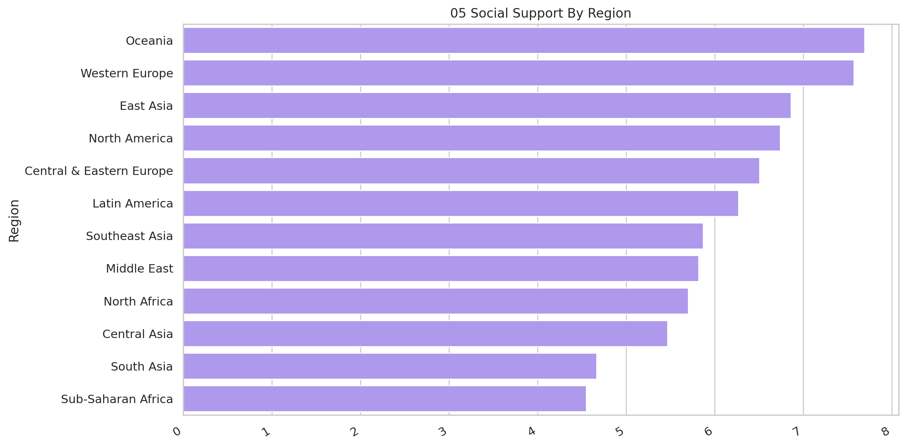
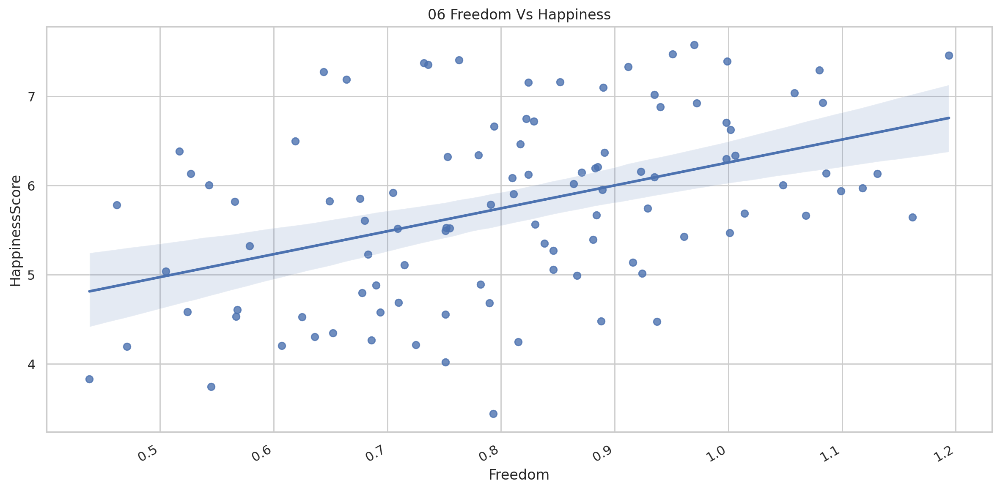
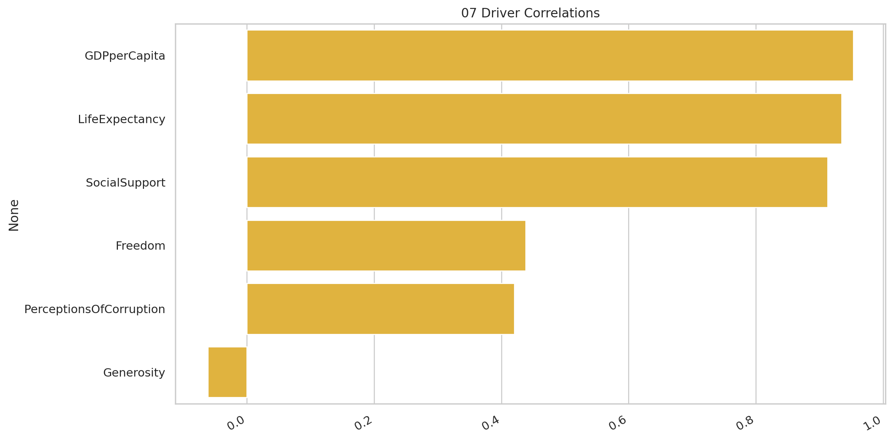
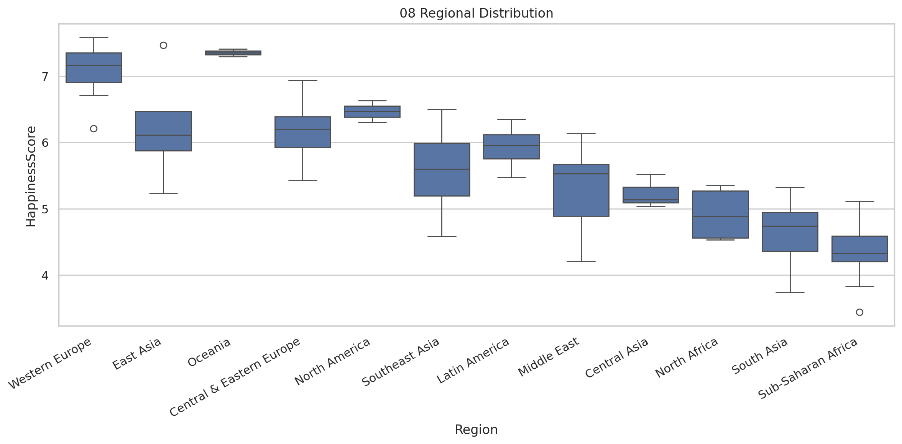

Cross-country assessment of well-being and its strongest supporting factors.
Executive Summary
This report converts the supplied project data into decision-ready findings and supporting evidence.
Findings
Norway leads at 7.579.
GDPperCapita is the strongest measured correlate of happiness (r = 0.95).
Oceania has the highest regional average (7.35).
The regional spread is 2.99 points.
GDP per capita and social support have visible positive relationships with happiness.
The final analytical dataset contains 103 complete country records.
Methodology
Country records were checked for duplicate and missing values. The analysis benchmarks happiness by region and calculates Pearson correlations between the score and the available economic, social, health, freedom, generosity, and corruption measures.
Visual Evidence

01 Top15 Happiest

02 Regional Averages

03 Gdp Vs Happiness

04 Correlation Heatmap

05 Social Support By Region

06 Freedom Vs Happiness

07 Driver Correlations

08 Regional Distribution
Recommendations
Prioritize the most material measurable opportunity.
Track the core KPIs in the accompanying dashboard.
Refresh the analysis before implementing high-impact decisions.